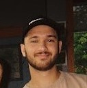

hi, i'm mahmoud.
I'm a software engineering student based in Ottawa with a background in health sciences. I'm currently focused on artificial intelligence and machine learning, cloud technology, and malware analysis
mahmoud.about()

I am currently in my second year of Computer Engineering at Algonquin College. I have a BScH from Queen's University and a background in health sciences. Some of the technologies and tools that I have been working with include:
- Java
- Swift/SwiftUI
- C/C++
- HTML and CSS
- Python
mahmoud.experience()
Software Developer Co-op Jan 2023 - April 2023
Nokia
- Automated many manual test cases on our cybersecurity product utilized by multiple multi-billion-dollar clients using Java, Cucumber, and Spring Boot
- Developed and executed integration tests for RESTful web services using Java, ensuring seamless integration with our automation test system and product server
- Actively participated in team meetings to identify effective approaches for implementing a test feature, contributing to the team's decision-making process, and leveraging problem-solving skills to analyze and evaluate options
- Led organization of student-engagement events as a Student Ambassador for the company
Occupational Health & Safety Advisor 2018-2019
Canada Border Services Agency
- Oversaw CBSA headquarters buildings as regional occupational health and safety advisor
- Used my knowledge of the Canada Labour Code and the National Joint Council Directive to work with clients and provided guidance on a case-by-case basis to branch and department management
- Developed a deep understanding of public sector infrastructure
- Briefed management on ongoing cases and provided summaries for recorded hearings with Health and Safety officers
Biomechanics Tutor 2019-2021
Queen's University Arts & Science Undergraduate Society
- Taught and guided 20 students on how to approach problems in Biomechanics
- Provided advice based on my own experience to these students about managing stress and staying healthy in a high-stress environment
- Prepared students for quizzes, tests, and exams
Research Assistant 2019-2021
Queen's University Human Vascular Control Lab
- Ran testing protocols on over 100 participants and provided recommendations to primary investigators on optimizations
- Assisted in writing research proposals and manuscripts
- Collected large amounts of data and performed analysis and modelling of large data sets
Founder and Co-President 2019-2021
MentalMatters (Advocacy Group at Queen's University)
- I founded and managed MentalMatters with the mission to improve the overall mental well-being of secondary and post-secondary students through education, research, and resources
- Hired and managed an executive team for 2 years
- Built and maintained a website for the initiative
- Organized and delivered presentations on mental health to hundreds of high school students in the Kingston city area
- Worked cooperatively with Queen's University and other non-profit initiatives to develop events and resources for students
COR Staff Member 2019-2021
Campus Obversation Room (COR)
- Set up and ran promotional events around campus to increase awareness of this resource at Queen's (marketing)
- Monitored individuals who are intoxicated and provided detailed reports to supervising healthcare staff on patient status